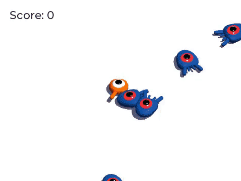

Game 3D đầu tiên của bạn
Trong loạt bài hướng dẫn từng bước này, bạn sẽ tạo game 3D hoàn chỉnh đầu tiên với Godot. Khi kết thúc loạt bài, bạn sẽ có một dự án đơn giản nhưng hoàn chỉnh của riêng mình, giống như ảnh gif động bên dưới.

Game mà chúng ta sẽ lập trình ở đây tương tự Game 2D đầu tiên của bạn, nhưng có điểm khác: giờ bạn có thể nhảy và mục tiêu là đè bẹp lũ quái. Bằng cách này, bạn vừa nhận ra các khuôn mẫu đã học ở bài hướng dẫn trước, vừa phát triển thêm từ đó với code và tính năng mới.
Bạn sẽ học cách:
Làm việc với tọa độ 3D thông qua cơ chế nhảy.
Dùng kinematic body để di chuyển nhân vật 3D và phát hiện khi nào, như thế nào chúng va chạm.
Dùng các lớp vật lý (physics layer) và một nhóm (group) để phát hiện tương tác với các thực thể cụ thể.
Lập trình gameplay thủ tục cơ bản bằng cách tạo instance quái vật theo các khoảng thời gian đều đặn.
Thiết kế hoạt ảnh chuyển động và thay đổi tốc độ của nó khi chạy (runtime).
Vẽ giao diện người dùng trên game 3D.
Và nhiều hơn nữa.
Bài hướng dẫn này dành cho người mới bắt đầu đã theo hết loạt bài nhập môn. Chúng ta sẽ bắt đầu chậm với hướng dẫn chi tiết và rút gọn dần khi thực hiện các bước tương tự. Nếu bạn là lập trình viên có kinh nghiệm, bạn có thể xem mã nguồn hoàn chỉnh của bản demo tại đây:
Ghi chú
Bạn có thể theo loạt bài này mà không cần học loạt bài 2D trước. Tuy nhiên, nếu bạn mới làm quen với phát triển game, chúng tôi khuyên bạn nên bắt đầu với 2D. Code game 3D luôn phức tạp hơn, và loạt bài 2D sẽ cho bạn nền tảng để theo dõi dễ dàng hơn.
Chúng tôi đã chuẩn bị sẵn một số asset game để có thể đi thẳng vào code. Bạn có thể tải chúng tại đây: Asset Squash the Creeps.
Đầu tiên, chúng ta sẽ làm một prototype cơ bản cho chuyển động của người chơi. Sau đó, chúng ta sẽ thêm các quái vật xuất hiện ngẫu nhiên quanh màn hình. Tiếp theo, chúng ta sẽ triển khai cơ chế nhảy và đè bẹp trước khi trau chuốt game bằng một số hoạt ảnh đẹp mắt. Cuối cùng, chúng ta sẽ hoàn thiện với điểm số và màn hình chơi lại.